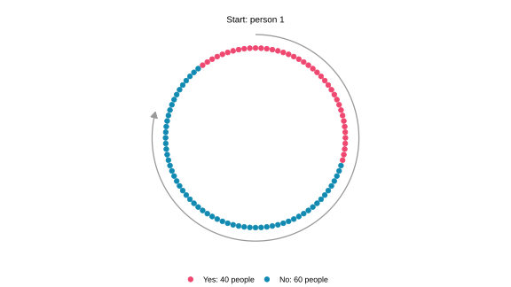
11 Getting Away from Bespoke Sampling Distributions**
$$ \newcommand{X}{} \newcommand{Y}{} % A hex digit after # inside a macro body is eaten by build-time expansion, so digit-leading hexes spell # via .
$$
Three Designs, Three Bespoke Calculations
Let’s look at some different ways of taking a sample from our population, also called sampling design.
We spent the last two chapters working out exact formulas for the distribution of the number of Yes responses in a sample from a population with binary responses. Sampling with replacement gave us the binomial distribution; sampling without replacement gave us the hypergeometric distribution. In the homework, we also looked at the distribution of the number of Yes responses under a form of randomized convenience sampling: we started at a randomly chosen house on a circular street and continued to the next three around the block. The plots below compare these three sampling designs for 80 calls to a population of 100 people, with 40 answering Yes. Those 40 Yes responses happen to be consecutive around the circle.
The population.
Each dot in the picture below is one person, pictured in order on the circular street. Pink dots answer Yes; teal dots answer No. The 40 Yes responses are consecutive, including where the numbering wraps from person 100 to person 1. The gray arc shows one way of taking a sample, an 80-call circular walk, starting at person 1 and following the arrow. The actual design chooses its starting person at random.
In the charts below, the green line marks the population quantity we want to estimate. The blue line marks the average draw from the sampling distribution—those are different things conceptually! We say that an estimator is unbiased if its expectation equals the quantity it estimates: we can see that the two lines coincide.
The opening plots show the totals of our 80 responses. Dividing each total by 80 gives the sample mean, so the common center at 32 becomes 32/80=0.4, the population average. While each sampling design has the same expected sample mean, we can notice some pretty big differences in the shape of their histograms.
With replacement.

Without replacement.
Circular walk.

The blue centers are the same, and they coincide with the green target: the designs get the population frequency right, on average. But the spreads and shapes are different. What’s going on here? With the same number of calls, the without-replacement design gives more tightly concentrated results than the with-replacement design. The circular walk gives two separated bumps. Those differences matter for how precise an answer we get and how we calibrate an interval around it.
The point. Calculating these sampling distributions exactly was a lot of work, and these were probably the simplest cases that are relevant to real practice. We worked out the two- or three-call case that was tractable by hand, wrote out the continuation with ellipses, and tried to see the pattern. We didn’t use a generalizable strategy to work these out. That isn’t a general problem-solving method we can count on reproducing.
What we’re going to do now is talk about some principles that will let us break the question into smaller calculations, without working out the sampling distribution in full.
These won’t give us the full distribution, but they will give us measures of location and spread. In other words, where the distribution is centered and how wide it is. Often, but not always, that’s enough to do calibration.
There is a harder reason than effort to want this. For Yes or No answers we had convenient exact distributions waiting for us: the binomial with replacement, the hypergeometric without. Ask people how many years of school they finished, or how many hours a week they work, and there is usually no comparably convenient distribution to reach for. Something could often still be worked out or simulated, but it would be bespoke again, and that is the thing we are trying to get away from.
The deeper problem is what those calculations take as input. The binomial needs the population frequency of Yes; the hypergeometric needs how many people in the population would say Yes; the circular walk needs the whole arrangement of answers around the street. Simulating needs the same things. Every one of them is a fact about the population, and the population is what the survey exists to learn about. We would have to know the answer to calculate the distribution of our estimate of it.
Expectation and variance don’t escape that — the spread of the sample mean depends on the population’s spread, and we will see \sigma^2 appear in every formula we derive. What makes them workable is that this is all they ask for. The answer comes out as a formula in one or two population summaries, the same formula whatever the population happens to be, and a sample can estimate those summaries. That is the difference between needing to know the population and needing to estimate a number from it: we never recover the sampling distribution, but we get its center and its width from the survey we actually ran.
When we don’t know the sampling distribution, we have two ways to go. We can bootstrap it, which we come to later in the course. Or we can calculate its center and its spread, which is what we do here.
Summarizing Location and Spread
We want to describe the center and spread of a sampling distribution without calculating every probability. First of all, what is this center that we have been pointing to?
Expectation and Location
This histogram shows a single survey’s sampling distribution. You’ll notice it resembles the sampling distributions from our with- and without-replacement designs, with a single bump.
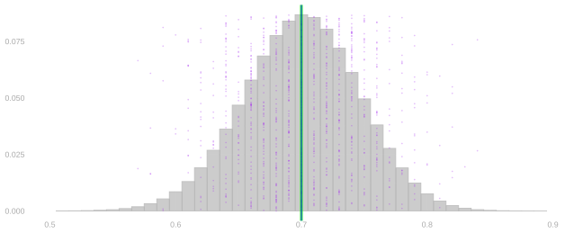
A blue line is drawn at 0.7, near the values where most draws land. This marks the expectation of the survey’s sample proportion.
For a finite-valued random variable, we define the expectation as its probability-weighted average.
\mathop{\mathrm{E}}[X] = \sum_x \textcolor{#EF476F}{x}\textcolor{#118AB2}{P(X=x)}
That means summing, over the x axis, the product of …
- … the x, the position along the x-axis
- … the P(X=x), the bar height at that position.
Remember: histograms are for counting dots. Each dot is one draw of the quantity we are plotting. At each x-value, its probability height tells us approximately what fraction of the dots are there.
To average the dots, we multiply each x-value by that height and add: we are just averaging the dots, grouped by their x-values. This applies to the response or to whatever quantity we are plotting, including our estimator.
So, that’s how we draw our line. But does that tell us where the distribution is located, i.e., where draws are likely to be?
Single Bump
The expectation works well as a summary of location for a single-bump sampling distribution. The center describes where an individual survey result is likely to land.
This is what an ordinary survey with or without replacement can look like: its results concentrate near the population frequency. It’s a pretty picture, but not every sampling design looks like this.
Just the one guy (one response)
To illustrate this point, let’s imagine a ridiculous sampling design where we just call one guy who says Yes or No.
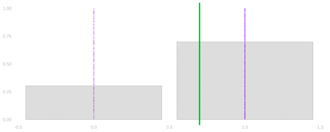
The expectation is 0.7, like with our single bump distribution, but a draw is either zero or one. No draw will ever land at the blue line because it’s just the one guy, rather than an average of many responses.
It sounds silly, but this kind of thing can happen when we start a survey at a random place and everyone nearby has similar opinions. We may ask many people, but if they all give the same answer, the sample mean is still just zero or one. Real neighborhoods need not be that uniform for the problem to matter: collecting more nearby responses can give us much less information than we expected.
Multiple Bumps
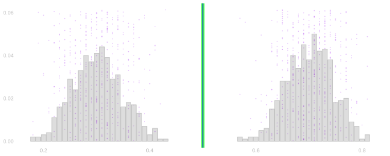
We’ve got two bumps in this histogram because draws are usually near either 0.3 or 0.7. Therefore, the expectation is 0.5. That matches the target our survey is supposed to estimate: the actual proportion of Yes responses in the population. The blue line sits on top of the green line.
However, while their agreement means the estimator is unbiased, it doesn’t mean individual surveys land near the target. Looking at the chart, we can see the problem: our blue line is drawn in between the bumps, far away from where most survey answers land. In other words, having the right average across surveys does not always make an individual survey useful.
We can also see that making the survey bigger does not necessarily solve the design problem. Instead of calling the one guy, the opening circular walk visits 80 of 100 people, yet its sampling distribution still has two separated bumps.
Let’s say we’re trying to take a survey about noise in our neighborhood. Apartments in the middle of a block may be quieter and more expensive than apartments beside a noisy avenue. A short walk starting in the middle of the block might sample only the people in those quieter apartments. On the other hand, if we start our walk near the end of the block and cross the avenue, we’re only talking to people in noisy apartments on both sides.
We’ll get very different answers based on where we start our walk. The arrangement of the population matters.
Luckily, knowing the expectation is still useful, even when it lies far from where draws are likely to be.
Calibrating an Interval, and Choosing a Design
There are two questions here: Once we have run a survey, how do we calibrate a confidence interval? And, before we run a survey, which design should we choose? To the first question, if we think back to the opening circular walk picture, more than 5% of the probability sits at each endpoint. A single interval containing 95% of the sampling distribution therefore has to include both endpoint piles, covering the whole range of possible survey totals. The one-response picture has the same problem: an interval containing 95% of its probability has to include both zero and one. Valid coverage can come at the cost of an interval too wide to tell us much of anything!
So which design should we pick? A design that repeatedly gives answers far from the population frequency is one we should avoid. These distributions tell us both how to summarize our precision and whether the survey will give us a useful answer in the first place.
One Response Versus an Average
There is a distinction here between one response and an average of responses. The “One Response” picture has all its draws at zero or one. The “Single Bump” picture is the distribution of an average of 100 independent flips with the same probability of one: it is concentrated near 0.7. Averaging independent draws from the two-bump distribution also concentrates their average around its expectation. The tendency of such averages to form a single bump is part of what we will study with the central limit theorem.
Our estimates are averages. We need to know both where those averages are centered and how far they tend to fall from that center. And we want the center to correspond to the population quantity we are estimating. Later, uniform sampling will connect the expectation of a response to the population mean.
Linearity: Expectations Add
Linearity is the key property that makes expectation useful for our sampling calculations. It lets us find the expectation of a total from the expectations of its parts.
For random variables Y and Z with finite expectations and numbers a and b,
\begin{aligned} \mathop{\mathrm{E}}[aY+bZ] &=\mathop{\mathrm{E}}[aY]+\mathop{\mathrm{E}}[bZ]\\ &=a\mathop{\mathrm{E}}[Y]+b\mathop{\mathrm{E}}[Z]. \end{aligned}
There are two things going on here. To average a sum of two things, we can take two averages and sum. To average a constant times a random variable, we multiply the random variable’s average by the constant. In other words, we can distribute expectations and can pull constants out of them. These rules do not require the two random variables to be independent. These rules will let us find the center of the sample mean from the distribution of each response.
Proof of Linearity
Everything in this proof is summing. An expectation is a probability-weighted sum, the thing we are averaging is itself a sum, and the order in which we run a double sum doesn’t change what it comes to. Beyond that we need one fact about the joint distribution. Writing P(Y=y,Z=z) for the probability that both equalities hold, summing it over one of the two variables leaves the other’s margin behind.
\sum_z P(Y=y,Z=z)=P(Y=y), \qquad \sum_y P(Y=y,Z=z)=P(Z=z).
That identity is what makes the double sum collapse. Once the inner sum has run over z, the thing multiplying y is no longer a joint probability but P(Y=y), and what is left is an ordinary expectation of Y on its own — the joint distribution has dropped out of the calculation entirely. The derivation does this once for each variable, after splitting the two terms apart and pulling the constants out of them.
\small{ \begin{aligned} \mathop{\mathrm{E}}\p*{ a Y + b Z } &\overset{\texttip{\small{\text{?}}}{by definition of expectation}}{=} \sum_{y}\sum_z (a y + b z) \ P(Y=y, Z=z) \\ &\overset{\texttip{\small{\text{?}}}{changing the order in which we sum}}{=} \sum_{y}\sum_z a y \ P(Y=y, Z=z) + \sum_{z}\sum_y b z \ P(Y=y, Z=z) \\ &\overset{\texttip{\small{\text{?}}}{pulling constants out of the inner sums}}{=} \sum_{y} a y \ \sum_z P(Y=y,Z=z) + \sum_{z} b z \ \sum_y P(Y=y,Z=z) \\ &\overset{\texttip{\small{\text{?}}}{the summing identity}}{=} \sum_{y} a y \ P(Y=y) + \sum_{z} b z \ P(Z=z) \\ &\overset{\texttip{\small{\text{?}}}{pulling constants out of the remaining sum}}{=} a\sum_{y} y \ P(Y=y) + b\sum_{z} z \ P(Z=z) \\ &\overset{\texttip{\small{\text{?}}}{by definition}}{=} a\mathop{\mathrm{E}}Y + b \mathop{\mathrm{E}}Z. \end{aligned} }
So we can break the expectation of a sum into a sum of expectations, and we never had to ask whether the responses were independent.
Why the Sample Mean Is Unbiased
Here is the question we actually want answered. We are using the sample mean to estimate the population mean, and an estimate is only worth having if it is centered on the thing it estimates. Is it?
The work ahead all belongs to that one question. We pick up a tool, use it to find what a single uniform draw has to say, and then let linearity carry the answer back up to the average.
A Tool: Indicators Turn Probabilities into Expectations
Linearity works on sums, and this breaks the response down into a sum. As it stands Y_i isn’t one — it’s whatever the person we happened to call said. The indicator breaks it into one term per person: Y_i = y_1\,1_{=1}(J_i) + y_2\,1_{=2}(J_i) + \cdots + y_m\,1_{=m}(J_i). Every term is zero except the one for the person we called, so the sum is that person’s response. Now linearity can reach it. We write the indicator that call i selected person j, 1_{=j}(J_i) = \begin{cases} 1 & \qqtext{ for } J_i = j \\ 0 & \qqtext{ otherwise} \end{cases} It is one on exactly the calls that landed on person j, so its probability-weighted average is the probability of landing there, \mathop{\mathrm{E}}[1_{=j}(J_i)] = 0\,P(J_i\ne j) + 1\,P(J_i=j) = P(J_i=j).
This is a principle, not a notational trick: probabilities are expectations of indicators. Consequently, every rule we prove for expectations is also a tool for probabilities. We write them the same way for a response: 1_{=3}(Y) is one when the response is 3 and zero otherwise, so its expectation is P(Y=3).
Here is the same operation in a picture. Let X count the Yeses in five independent uniform calls to a population where 40% say Yes.
Here is a population of ten where 40% say Yes: four people respond 1 and six respond 0.
Here is the distribution of X, and beside it the distribution of 1_{=3}(X).
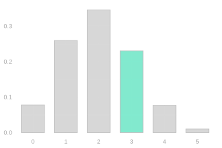
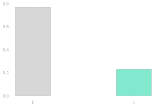
On the left is its distribution, with the outcome X=3 marked. On the right is the distribution of 1_{=3}(X), which has just two outcomes: it is zero with probability P(X\ne3) and one with probability P(X=3)\approx0.230. That height is both P(X=3) and \mathop{\mathrm{E}}[1_{=3}(X)] — the same number read two ways.
The Expected Response Is the Population Mean
Now we use it for what we came for: the expectation of a single response, written as a fact about the population rather than about our sampling.
Let the fixed population values be y_1\ldots y_m, with population mean \mu. On draw i we select person J_i and observe Y_i=y_{J_i}.
We say that a call selects a person uniformly at random if every person in the population has the same chance of being selected, P(J_i=j)=1/m for each of the m people. All three of our designs have this property on every call: with replacement and without replacement by construction, and the circular walk because reaching a particular person on a particular call requires one particular starting person, and every starting person is equally likely.
Use an indicator for each possible selection. Exactly one is one, so this sum picks out the selected person’s value:
Y_i=\sum_{j=1}^{m}y_j1_{=j}(J_i).
Linearity and the indicator trick turn its expectation into the population average:
\begin{aligned} \mathop{\mathrm{E}}[Y_i] &\overset{\texttip{\small{\text{?}}}{linearity}}{=}\sum_{j=1}^{m}y_j\mathop{\mathrm{E}}[1_{=j}(J_i)]\\ &\overset{\texttip{\small{\text{?}}}{probability as expectation}}{=}\sum_{j=1}^{m}y_jP(J_i=j)\\ &\overset{\texttip{\small{\text{?}}}{uniform sampling}}{=}\sum_{j=1}^{m}y_j\frac{1}{m}\\ &=\mu. \end{aligned}
Functions of a Uniform Draw
Notice how little that calculation used. Nothing in it cared that we were averaging the response itself, so the same argument hands us something we don’t need yet: the variance of a single call. We bank it here and spend it when we come to spread, which averages squared distances rather than responses.
The same calculation applies to any function of the response: \mathop{\mathrm{E}}[f(Y_i)]=\frac1m\sum_{j=1}^m f(y_j). Choosing f(y)=(y-\mu)^2 also identifies the population variance, \mathop{\mathrm{E}}[(Y_i-\mu)^2]=\frac1m\sum_{j=1}^m(y_j-\mu)^2=\sigma^2. This calculation does not use independence.
One call, then, already carries the population’s mean and its variance. Linearity is what lets us carry that fact up from the single call to the average of n of them.
Carrying It Back Up to the Average
One call, then, has the population mean for its expectation. That was the only piece missing. Linearity carries it back up to the average of n calls, which is the estimator we actually use.
We use the sample mean \bar Y to estimate \mu, writing \hat\mu=\bar Y=n^{-1}\sum_{i=1}^nY_i. When every call selects uniformly from the population, the sample mean is unbiased: its expectation is the population mean it estimates. \mathop{\mathrm{E}}[\hat\mu] = \mu
Linearity turns \mathop{\mathrm{E}}[\hat\mu] into n expectations, one per call. They are the same number because the calls are marginally identically distributed: taken one at a time, call 1 and call 2 and call n all have the same distribution, whatever they do together. That common distribution is uniform over the population, so each of the n expectations is \mu.
\begin{aligned} \mathop{\mathrm{E}}\left[\frac1n\sum_{i=1}^n Y_i\right] &\overset{\texttip{\small{\text{?}}}{via linearity}}{=} \frac1n\sum_{i=1}^n \mathop{\mathrm{E}}[Y_i] \\ &\overset{\texttip{\small{\text{?}}}{via equal-probability sampling}}{=} \frac1n\sum_{i=1}^n \mu \\ &= \frac1n \times n \times \mu = \mu. \end{aligned}
We have worked out the sample mean’s location without constructing its distribution.
Lack of independence does not make calculating the expectation of a mean any harder. Why not? Because linearity of expectation doesn’t require independence.
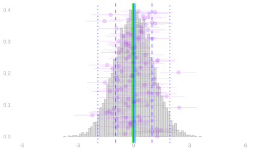
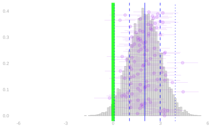
Being centered on the right thing is not automatic, and it is worth seeing what the alternative looks like before we move on. Below are two sampling distributions: one centered on the quantity being estimated, one shifted away from it.
We define the bias of an estimator as the difference between its expected value and the value of the thing it’s estimating. We’ve been using unbiased estimators, so this hasn’t been a problem. The sampling distribution on the right shows why bias matters: intervals calibrated to cover the estimator’s mean 95% of the time need not cover the thing we’re estimating that often. We’ll talk about this more later in the semester.
Our three designs are all in the unbiased case, and we can now say why without calculating a single sampling distribution.
The Same Expected Mean Under All Three Designs
For the 80-call samples at the start of the chapter, each response has expectation 0.4 under all three sampling designs. In the cycle, shifting the uniform starting point takes any fixed call position through all 100 people. Linearity gives the expected total immediately: \mathop{\mathrm{E}}\left[\sum_{i=1}^{80}Y_i\right]=\sum_{i=1}^{80}\mathop{\mathrm{E}}[Y_i]=80\times0.4=32. Dividing by 80 gives the expected sample average: \mathop{\mathrm{E}}\left[\frac1{80}\sum_{i=1}^{80}Y_i\right]=\frac{32}{80}=0.4. The three sampling distributions have different shapes and spreads. We found the center of every one from the distribution of a single call. There was no need to enumerate the 80-call sequences or find the distribution of their total. To explain their different spreads, we need the pair terms as well.
Spread: Averaging Squared Distances
Location is settled: all three designs are centered on the population frequency, and we got that without building a single sampling distribution. The pictures at the start of the chapter differed in their spread, not their center, so spread is what is left to explain. We need a number that says how far a draw typically falls from the center, and it has to be one we can actually calculate for a design. The figure below builds it.
Data. We measure each purple observation’s displacement from the blue mean. We draw that displacement as a pink or teal segment from the mean to the dot.
Square the distances. We square the segment lengths while keeping them anchored at the blue mean: lengths below one shrink, and lengths above one stretch. For this intermediate picture only, we keep each endpoint on its original side.
Make the squares positive. We swing the left-hand endpoints to the right of the blue mean to complete the picture of squaring; equal squared distances stack together. We average those squared distances to get the variance, shown as the distance from the blue line to the purple line.
Standard deviation. We take the square root of the variance to return to the data’s scale. We show that distance on both sides of the blue mean with blue dotted lines and compare it with the original purple dots.
To describe spread, we want to summarize how far the purple dots fall from the blue mean. Averaging their signed displacements would give zero: dots on opposite sides cancel even when they are far from the center. We need a measure of distance that counts both sides positively.
We could take absolute values and average the absolute distances. There is nothing wrong with that measure, but absolute values make calculations awkward: we have to distinguish cases according to the signs. Squaring makes both sides contribute positively using ordinary arithmetic. We will see shortly why this choice lets us calculate the spread of an average using only individual and pair distributions.
We define the centered response on call i as \textcolor{#EF476F}{Z_i}=\textcolor{purple}{Y_i}-\textcolor{blue}{\mathop{\mathrm{E}}[Y_i]}. This is the response’s displacement from its expectation. A positive displacement goes to the right of the blue mean, and a negative displacement goes to the left; the picture uses pink for positive displacements and teal for negative ones.
The pink example has displacement \textcolor{#EF476F}{Z_i}=0.5; the teal example has displacement \textcolor{#118AB2}{Z_j}=-1.5. Squaring gives \textcolor{#EF476F}{Z_i^2}=0.25 and \textcolor{#118AB2}{Z_j^2}=2.25: the shorter distance shrinks and the longer distance stretches.
One thing above is a drawing convention rather than arithmetic: squaring is a single operation, and the middle two frames split it only so you can watch it happen. Folding reflects the left-hand endpoints across the blue mean; it is not a second step applied after squaring.
We define the variance as the average squared distance from the expectation, and the standard deviation as its square root: \mathop{\mathrm{\mathop{\mathrm{V}}}}[Y_i]=\mathop{\mathrm{E}}[Z_i^2], \qquad \mathop{\mathrm{sd}}[Y_i]=\sqrt{\mathop{\mathrm{\mathop{\mathrm{V}}}}[Y_i]}. Variance is an expectation too — we are averaging squared distances instead of values — and the square root puts the summary back into the response’s own units.
One caution in reading the third frame: the variance is the distance from the blue line to the purple line, not the purple line’s position on the axis. Distances here are measured from the blue mean, which sits at 0.7, not from zero.
We now have both summaries a sampling distribution needs: the expectation for where it sits, the variance for how far it spreads. Location turned out to be easy, because expectations add whatever the design does. Spread is where the design finally shows up — and where the choice of squared distances starts paying for itself.
What’s so good about variance?
Here is the payoff for choosing squared distances: we can calculate the variance of the sample mean without finding its whole distribution. The reason is the square: when we square a sum, each term involves at most two responses. Linearity then lets us average those terms separately. We need the distributions of individual responses and pairs, rather than every possible sample. Here is how that reduction works.
For the sample mean \bar Y=n^{-1}\sum_{i=1}^nY_i, linearity gives \mathop{\mathrm{E}}[\bar Y]=\frac1n\sum_{i=1}^n\mathop{\mathrm{E}}[Y_i]. Using the centered response Z_i=Y_i-\mathop{\mathrm{E}}[Y_i], linearity expresses the centered average as an average of those centered responses: \begin{aligned} \bar Y-\mathop{\mathrm{E}}[\bar Y] &=\frac1n\sum_{i=1}^nY_i-\frac1n\sum_{i=1}^n\mathop{\mathrm{E}}[Y_i]\\ &=\frac1n\sum_{i=1}^n Z_i. \end{aligned}
Squaring Sums
To get the variance, we square that centered average and take its expectation. Squaring a sum produces products involving pairs of terms:
\cb*{\sum_{i=1}^n Z_i}^2 = \sum_{i=1}^n \sum_{j=1}^n Z_i Z_j
This is a generalization of the identity (a+b)^2 = a^2 + 2ab + b^2 to more terms. You may be so used to that you don’t even think about what’s really happening. Here’s a version where I’m very explicit: it’s a product of two copies of (a+b): one pink and one teal.
(a+b)^2 = \textcolor{#EF476F}{(a+b)}\textcolor{#118AB2}{(a+b)} = \textcolor{#EF476F}{a}\textcolor{#118AB2}{a} + \textcolor{#EF476F}{a}\textcolor{#118AB2}{b} + \textcolor{#EF476F}{b}\textcolor{#118AB2}{a} + \textcolor{#EF476F}{b}\textcolor{#118AB2}{b} = a^2 + 2ab + b^2
Squaring Sums: More Terms
How do we generalize this to more terms? We’ll use the same color-coded-copies trick. It helps to count out the terms in our pink copy using i and in our teal copy using j.1 When we multiply out our sums, we get a product term for each pair of terms in the sum. Each product term involves one term in the pink sum and one term in the teal one.
\cb*{\sum_{i=1}^n Z_i}^2 = \textcolor{#EF476F}{\sum_{i=1}^n Z_i} \textcolor{#118AB2}{\sum_{j=1}^n Z_j} = \textcolor{#EF476F}{\sum_{i=1}^n} \textcolor{#118AB2}{\sum_{j=1}^n} \textcolor{#EF476F}{Z_i} \textcolor{#118AB2}{Z_j}
The variance is the expectation of this squared displacement. Squaring and then using linearity gives \begin{aligned} \operatorname{Var}(\bar Y) &\overset{\texttip{\small{\text{?}}}{center}}{=}\mathop{\mathrm{E}}\left[\left(\frac1n\sum_{i=1}^nZ_i\right)^2\right]\\ &\overset{\texttip{\small{\text{?}}}{square}}{=}\frac1{n^2}\mathop{\mathrm{E}}\left[ \textcolor{#EF476F}{\sum_{i=1}^nZ_i} \textcolor{#118AB2}{\sum_{j=1}^nZ_j}\right]\\ &\overset{\texttip{\small{\text{?}}}{linearity}}{=}\frac1{n^2}\textcolor{#EF476F}{\sum_{i=1}^n} \textcolor{#118AB2}{\sum_{j=1}^n}\mathop{\mathrm{E}}[\textcolor{#EF476F}{Z_i}\textcolor{#118AB2}{Z_j}]\\ &=\frac1{n^2}\left(\sum_{i=1}^n\mathop{\mathrm{E}}[Z_i^2]+\sum_{i\ne j}\mathop{\mathrm{E}}[Z_iZ_j]\right). \end{aligned}
When i=j, a term is the square of one centered response. When i\ne j, it is the product of two centered responses. To calculate their expectations, we need the corresponding one-call and two-call distributions. We do not need the distribution of the whole sample.
The expected cross-product has a name. We define the covariance of X and Y as the mean of the product after centering both variables: \mathop{\mathrm{Cov}}(X,Y)=\mathop{\mathrm{E}}[(X-\mathop{\mathrm{E}}X)(Y-\mathop{\mathrm{E}}Y)].
This is what we need the two-observation table for: multiply each pair’s centered product by its joint probability and add. The result is the covariance for that pair of call positions.
There may be many pairs of call positions. If they all have the same joint distribution, one pair calculation can supply all the distinct-call terms. This is the saving we will look for in the sampling designs.
The algebra tells us what to calculate. It does not tell us the values of the pair terms. Those depend on the sampling design, and they can change what happens when we add observations.
How Dependence Affects the Sample Mean’s Variance
We can now evaluate the terms in the variance expansion. Uniform individual calls give each response the population mean \mu and variance \sigma^2. Exchangeability makes the covariance the same at every pair of distinct call positions. Independence makes that covariance zero.
With Z_i=Y_i-\mu, the cases in our expansion are \begin{aligned} \mathop{\mathrm{E}}[\textcolor{#EF476F}{Z_i}\textcolor{#118AB2}{Z_j}] &=\begin{cases} \sigma^2 & \textcolor{#EF476F}{i}=\textcolor{#118AB2}{j},\\ \mathop{\mathrm{Cov}}(Y_i,Y_j) & \textcolor{#EF476F}{i}\ne\textcolor{#118AB2}{j}. \end{cases} \end{aligned}
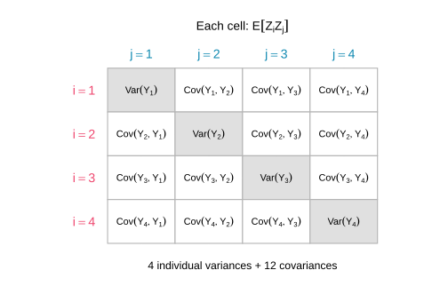
For four calls, the double sum has sixteen terms: four individual variances on the diagonal and twelve covariances off it. Uniform sampling makes each diagonal term \sigma^2. The off-diagonal terms need not be equal.
There are n individual squares and n(n-1) ordered pairs of distinct call positions. For n\ge2, we define the mean covariance as the average over those distinct pairs: \bar c_n=\frac1{n(n-1)}\sum_{i\ne j}\mathop{\mathrm{Cov}}(Y_i,Y_j). Their total is n(n-1)\bar c_n, so the expansion gives \begin{aligned} \mathop{\mathrm{\mathop{\mathrm{V}}}}[\bar Y] &=\frac1{n^2}\textcolor{#EF476F}{\sum_{i=1}^n}\textcolor{#118AB2}{\sum_{j=1}^n}\mathop{\mathrm{E}}[\textcolor{#EF476F}{Z_i}\textcolor{#118AB2}{Z_j}]\\ &\overset{\texttip{\small{\text{?}}}{n equal-index terms and n(n-1) distinct-index terms}}{=}\frac1{n^2}\{n\sigma^2+n(n-1)\bar c_n\}\\ &=\frac{\sigma^2}{n}+\frac{n-1}{n}\bar c_n. \end{aligned} Do we have to calculate every pair’s covariance to find their mean? When reordering the call positions leaves their joint distribution unchanged, we say that the calls are exchangeable. Exchangeability lets one pair stand for all of them. Call the common covariance c=\mathop{\mathrm{Cov}}(Y_1,Y_2). Then \bar c_n=c, and one pair calculation supplies the entire covariance contribution.
The individual-variance contribution shrinks like 1/n. The covariance contribution is roughly c. For positive covariance, keeping the usual 1/n variance scale requires c to be of order \sigma^2/n or smaller. A fixed positive covariance leaves a variance floor: more calls do not average away their shared variation.
Independent Calls: Only the Individual Variances Remain
Take the simplest of the three designs first. Sampling with replacement is the one where the pair terms disappear completely, and seeing why tells us what the other two designs are paying for.
We say that the calls are independent if the probability of every particular caller sequence is the product of the individual caller probabilities. Of our three designs, only sampling with replacement has this property: once we know where a without-replacement sample has already called, that person cannot come up again, and once we know where the circular walk started, we know every person it will reach.
Independence sets c=0. To see why, we use its corresponding rule for expectations.
The expectation of a product factors for any functions f and g of independent finite-valued random variables X and Y: \begin{aligned} \mathop{\mathrm{E}}[f(X)g(Y)] &\overset{\texttip{\small{\text{?}}}{definition of expectation}}{=}\sum_x\sum_y f(x)g(y)P(X=x,Y=y)\\ &\overset{\texttip{\small{\text{?}}}{factored joint probabilities}}{=}\sum_x\sum_y f(x)g(y)P(X=x)P(Y=y)\\ &=\textcolor{#EF476F}{\left\{\sum_x f(x)P(X=x)\right\}} \textcolor{#118AB2}{\left\{\sum_y g(y)P(Y=y)\right\}}\\ &=\textcolor{#EF476F}{\mathop{\mathrm{E}}[f(X)]}\textcolor{#118AB2}{\mathop{\mathrm{E}}[g(Y)]}. \end{aligned} The two-variable rule is all this section needs. The same factorization for n calls, and the fact that the expectation property is equivalent to independence rather than merely implied by it, are in the appendix.
Linearity implies \begin{aligned} \mathop{\mathrm{E}}[\textcolor{#EF476F}{Z_i}] &\overset{\texttip{\small{\text{?}}}{definition of the centered response}}{=}\mathop{\mathrm{E}}[Y_i-\mathop{\mathrm{E}}[Y_i]]\\ &\overset{\texttip{\small{\text{?}}}{linearity}}{=}\mathop{\mathrm{E}}[Y_i]-\mathop{\mathrm{E}}[Y_i]=0. \end{aligned} For distinct draws i\ne j, independence implies \begin{aligned} \mathop{\mathrm{E}}[\textcolor{#EF476F}{Z_i}\textcolor{#118AB2}{Z_j}] &\overset{\texttip{\small{\text{?}}}{independence}}{=}\textcolor{#EF476F}{\mathop{\mathrm{E}}[Z_i]}\textcolor{#118AB2}{\mathop{\mathrm{E}}[Z_j]}\\ &\overset{\texttip{\small{\text{?}}}{centering.}}{=}0 \end{aligned}
Setting the distinct-pair terms to zero leaves only the individual variances, \mathop{\mathrm{\mathop{\mathrm{V}}}}[\bar Y]=\frac{n\sigma^2}{n^2}=\frac{\sigma^2}{n}.
With replacement, each additional call contributes another independent response. The sample mean stays centered at the population mean, and its variance decreases with the number of calls.
Taking square roots gives the standard deviation of the sample mean, \mathop{\mathrm{sd}}[\bar Y]=\frac{\sigma}{\sqrt n}. This quantity has a name. The standard error is the standard deviation of whatever estimator we are talking about. So \sigma/\sqrt n is the standard error of our survey’s estimate, while \sigma itself is the standard deviation of a single response. There is no standard way of telling those apart in symbols, so we will write \operatorname{se}_n for the standard error of an average of n responses — the subscript is how many we are averaging — and keep \sigma for the spread of the responses themselves: \operatorname{se}_n=\frac{\sigma}{\sqrt n}, \qquad \widehat{\operatorname{se}}_n=\frac{\hat\sigma}{\sqrt n}. The hatted version is the one we can actually calculate, because it uses the standard deviation of the responses we have rather than the population’s. Four times as many independent calls halves the standard deviation. Doubling the number of calls divides it by \sqrt2. The improvement gets slower as the sample gets bigger.
The Three Properties Together
We have now used all three of the properties a sampling design can give us, each where it was needed. They are nested restrictions. All three of our designs have uniform individual calls, which is what put every sampling distribution’s center on the population frequency. With and without replacement are also exchangeable, which let one pair calculation stand for every pair. Only sampling with replacement is independent, which is what made the pair terms vanish. When the individual calls all have the same distribution, independence implies exchangeability: reordering the calls only reorders the factors in the same product.
| Property of the calls | With replacement | Without replacement | Circular walk |
|---|---|---|---|
| Uniform individual calls: every person has the same chance on the first call, the second, and so on | Yes | Yes | Yes |
| Exchangeability: reordering call positions preserves the joint distribution | Yes | Yes | No |
| Independence: knowing earlier calls does not change the chances on the next call | Yes | No | No |
Responses That Aren’t Zero or One
Nothing in this chapter used the fact that a response was zero or one. The expectation summed position times bar height, linearity regrouped a sum, uniform sampling averaged the population, and the variance averaged squared distances. All of that works on any numbers. It is worth seeing once on numbers that are not frequencies, because for binary responses \sigma^2=\theta(1-\theta), and a formula like that makes the variance look like a fact about the design when it is a fact about the responses.
These are years of education for 2,271 people from a survey of Californians, with mean 14.3 and standard deviation 2.5. The variance is not a function of a frequency. It is the average squared distance from the mean, computed from those values the same way we computed \theta(1-\theta) from zeros and ones.
The same picture runs on them. Every person is a dot, the bars count them, and two of them carry arms through the transformation: someone with twelve years of education, -2.3 years below the mean, and someone with eighteen, 3.7 above. These distances are years rather than the small numbers in Figure 11.1, so squaring moves them much further: three years from the mean squares to nine.
Data. Each dot is one person’s distance from the mean, in years. The bars count them, and their average is zero.
Barbells. Keep every dot. Connect the two marked people to their signed squares: -2.3 moves to -5.2, and 3.7 moves to 13.9. The sign still records which side of the mean the person came from.
Signed-square distribution. Replace the bars by the distribution of the signed squares. Teal came from below the mean, pink from above. A distance of a year or two stays near zero; the few people with eight years of education, or with twenty, move out to the edges of the picture.
Fold and average. Fold the negative side onto the positive side and keep the colors. The green line marks the average squared distance—the variance, 6.1. Its square root, 2.5 years, is the standard deviation.
The standard deviation of an average of them is \sigma/\sqrt n, unchanged, because the derivation never looked at what the responses were:
| calls | sd of the average |
|---|---|
| 4 | 1.23 |
| 16 | 0.62 |
| 64 | 0.31 |
Comparing Sample Sizes
Return to the same 100 people as in the opening picture, with 40 consecutive Yes responses around the circle. We can compare the standard deviation of the sample mean as the number of calls increases. The plot uses the exact sampling distributions for the same three mechanisms.
The same three designs, at three sample sizes, as whole distributions rather than as a single summary. Sample sizes 5, 20 and 80 run down the rows and the three designs across the columns. Where are the distributions of the sample average located? How do their spreads compare? What changes as the sample grows?
The with-replacement curve has the square-root rate we just calculated. Without replacement, calling everyone leaves no sampling uncertainty. The circular walk also reaches the exact population mean when it calls everyone, but collecting nearby responses gives a different pattern along the way. Does increasing the sample size at least guarantee that the spread decreases at every step?
Design problems
We usually collect more observations to make an average more precise. But another observation need not reduce its variance. The way we collect the observations matters.
Imagine surveying noise along a cross street where the same pattern repeats on every block: noisier near the avenues, quieter mid-block. We start at a random household and walk along the street. A full block balances those locations, but adding part of the next block can increase the variance of our average again.
Put alternating zeros and ones around a circle. Choose a starting person uniformly at random and take successive people along the circle. For each sample size, different starts give a distribution of sample averages. The plot records the variance of that distribution: sample size runs along the horizontal axis, and the variance of the sample mean runs up the vertical axis. It is not the spread of responses within one sample.
With two calls, the mean is exactly 1/2. With three, it is either 1/3 or 2/3, with equal probability. The expected sample mean is still 1/2, but adding the third observation has increased its variance from zero to 1/36.
Every even sample size completes whole periods and gives the exact mean. At odd sizes the unfinished period contributes one extra zero or one, so the variance is 1/(4n^2). The positive variances get smaller as we cover more periods. This design is very accurate for large samples; the example shows the narrower point that variance can increase at a particular step. Doubling the sample size here completes whole periods and does not cause an increase.
What fails is a guarantee at each additional call. Individual calls are still uniform over the population; their dependence produces the uneven improvement. What about the sampling mechanisms we actually use, and how can we understand their behavior when independence is unavailable?
That question is where the next chapter picks up, and the lecture ends there. What follows is practice: the calculations this chapter rests on, gathered in one place to work through.
Practice
Everything in this chapter has been one operation: transform the response, then average. Which transformation we choose is what distinguishes the summaries. Averaging the response itself gives the expectation \mathop{\mathrm{E}}[X], its first moment. Averaging its square gives \mathop{\mathrm{E}}[X^2], the second moment. Averaging the squared distance from the expectation gives the variance. The exercises below are that one operation, run on a survey’s responses.
Here is the binary case to calculate on: a population answering Yes with probability \theta.
With P(X=1)=\theta, the expectation is 0(1-\theta)+1\theta=\theta and the second moment is 0^2(1-\theta)+1^2\theta=\theta. The two agree because squaring does nothing to zero or one. The variance does something different: it records how far the two possible answers sit from the mean.
What follows is the part about independence we kept out of the argument: we only ever needed two calls at a time, but nothing about it stops at two.
Appendix: Independence as a Property of Expectations
The definition for a whole sample is the same shape as the one for two: the calls are independent when P(J_1 \ldots J_n = j_1 \ldots j_n) = P(J_1=j_1) \cdots P(J_n=j_n), which for sampling with replacement is 1/m^n, the product of n copies of 1/m. For more than two calls this asks more than that every pair factors on its own; a sequence in which every pair factors but the whole does not can be built, though it takes some effort. Every pair of calls with replacement does factor: there are m^{n-2} sequences in which call i selects person k and call j selects person l, one for each thing the other n-2 calls can do, each with probability 1/m^n, so their total is m^{n-2}/m^n = 1/m^2 = P(J_i=k)P(J_j=l).
We proved that independence of X and Y implies \mathop{\mathrm{E}}[f(X)g(Y)]=\mathop{\mathrm{E}}[f(X)]\mathop{\mathrm{E}}[g(Y)] \qqtext{for all functions} f \qqtext{and} g. The reverse implication holds as well: if this property holds for every pair of functions f and g, then X and Y are independent. So the two are equivalent, and some people take the expectation property as the definition. To see why the reverse holds, let f and g be indicators, f=1_{=x} and g=1_{=y}. Their product 1_{=x}(X)1_{=y}(Y) is one when X=x and Y=y and zero otherwise, so \mathop{\mathrm{E}}[1_{=x}(X)1_{=y}(Y)]=P(X=x,Y=y) \qqtext{and} \mathop{\mathrm{E}}[1_{=x}(X)]\mathop{\mathrm{E}}[1_{=y}(Y)]=P(X=x)P(Y=y). If the expectation property holds for these f and g, every joint probability is the product of the two marginal probabilities. That is independence.
The same goes for n calls. Independence, P(J_1 \ldots J_n = j_1 \ldots j_n)=P(J_1=j_1)\cdots P(J_n=j_n), is equivalent to \mathop{\mathrm{E}}[f_1(J_1)\cdots f_n(J_n)]=\mathop{\mathrm{E}}[f_1(J_1)]\cdots\mathop{\mathrm{E}}[f_n(J_n)] \qqtext{for all functions} f_1 \ldots f_n. One direction is the regrouping from before with n sums instead of two. The other is indicators again.
What this way of thinking buys is that going from n calls down to fewer costs nothing. To keep calls i and j and drop the rest, let f_i and f_j be indicators and every other function the constant one. The constant factors have expectation one and disappear, P(J_i,J_j=k,l)=\mathop{\mathrm{E}}[1_{=k}(J_i)1_{=l}(J_j)]=\mathop{\mathrm{E}}[1_{=k}(J_i)]\mathop{\mathrm{E}}[1_{=l}(J_j)]=P(J_i=k)P(J_j=l). Any two calls are independent, and the same move keeps any set of calls. That is the counting argument above without the counting. And it is the cross term itself: with f_i=f_j=z in place of the indicators, \mathop{\mathrm{E}}[Z_iZ_j]=\mathop{\mathrm{E}}[Z_i]\mathop{\mathrm{E}}[Z_j].
If we used i to count terms in both sums, we’d wind up with two different things we call i: one pink and one teal. We could get by saying ‘pink i’ and ‘teal i’ in class, but people you meet later on would probably get confused if you talk this way. Using i and j is conventional.↩︎